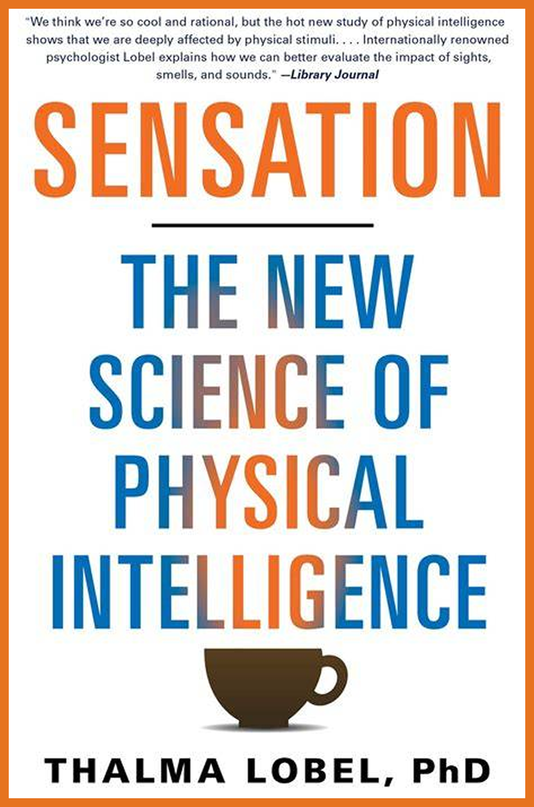

2014
Cognitive Science
Synopsis
Drawing on the concept of embodied cognition, this book highlights how our physical environments—such as the temperature of a drink, the weight of a clipboard, or the color of a room—subconsciously dictate our choices, judgments, and behaviors.
Author Background
Dr. Thalma Lobel is an internationally recognized psychologist and a full professor at the School of Psychological Sciences at Tel Aviv University. She has served as the director of the child clinical psychology program and was the Dean of Students at the university. She has conducted groundbreaking research on human behavior, gender roles, and cognitive science, and has been a visiting professor at prestigious universities, including Harvard.
Why Read This Book
It reveals the hidden physical variables that constantly manipulate our subconscious mind. Understanding these principles allows you to design your immediate environment (like your office or home) to maximize focus, improve negotiation outcomes, and master self-control.